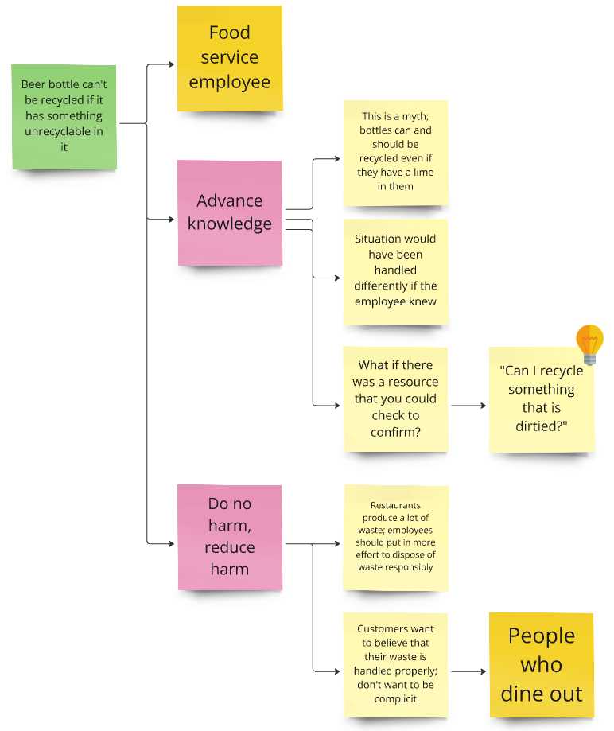
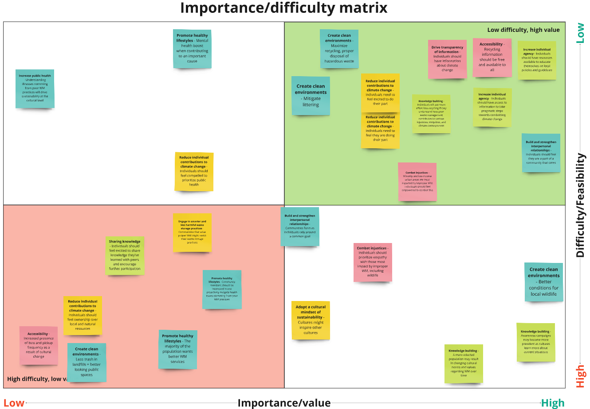
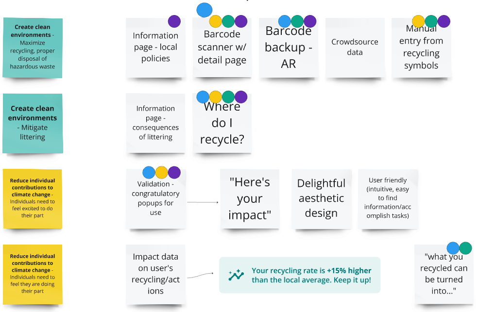
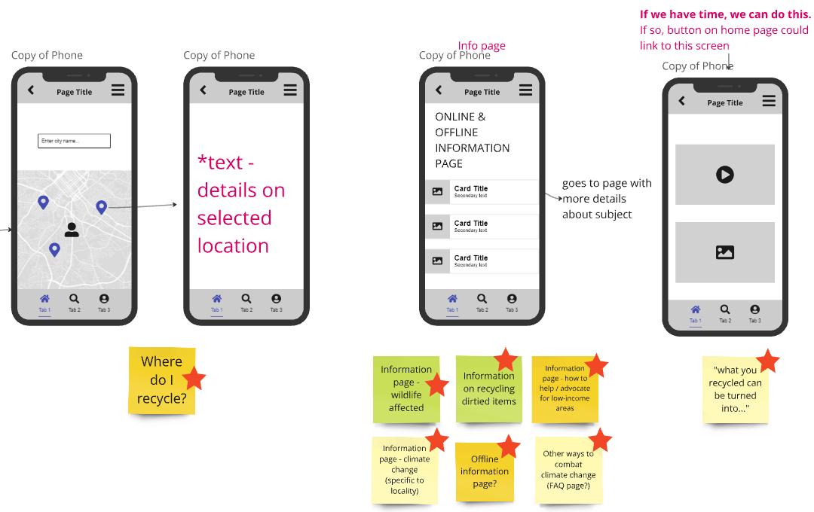

Team — Three UX designers and one computer science student
My role — Lead UX Designer and project manager
Client — Namibia University of Science and Technology
Timeline — February to May 2024
This project was completed as a group project in one of my classes in graduate school. The goal of the project was to collaborate with a student from the Namibia University of Science and Technology to design a solution to a social or environmental issue present in Namibia using a modified Value Sensitive Design (VSD) framework. After some reflexive workshopping, which included identifying our own values as designers and as a team, we settled on designing a mobile app that helps users engage in responsible and sustainable recycling practices.
The project began with each team member reflecting on their own positionality and values within the problem space. Emergent values included equality and justice, harm reduction, improved happiness and well-being, and advancing knowledge. Waste management and recycling soon surfaced as a topic that we all had interest in, which touched all the values we identified and satisfied a social need in Namibia (and beyond).
Following approval of our topic, we conducted extensive research on the state of waste management practices around the world. One major issue we identified is that recycling practices differ depending on local ordinances and jurisdictions. These differences aren't always easily available or ascertainable and make it difficult for people in certain areas to understand what materials can/cannot be recycled or how to dispose of potentially hazardous materials, such as batteries. Thus, it became clear that our solution needed to include comprehensive, redundant, and easy-to-find information about recycling laws in the user's specific area.
The team then leveraged a method, which we coined “fly-on-the-wall situation mapping,” (involving a combination of fly-on-the-wall observations and situation mapping—not the most creative title, I admit) to identify scenarios of confusion over what can or cannot be recycled, then mapping those scenarios to stakeholders, their values, and underlying themes. Observing waste disposal “in the wild” was a bit of a challenge, but we found some creative ways to get around it. For example, I paid closer attention to how the various bins were used at my work at the restaurant and asked follow-up questions when I noticed something strange happen. Using Miro, the team created associations between themes, values, and stakeholders, which later culminated in product requirements.
An example scenario from the aptly named Fly-on-the-wall Situation Map exercise
After creating an exhaustive list of potential product features, we implemented two methods to refine the list into the most valuable and impactful system requirements. First, we completed an importance/difficulty matrix as a team to determine which features have the highest impact and greatest technical feasibility:
The second method we used to prioritize product features was dot voting, where each team member voted on product features to democratically determine which features were most important for a first pass at a product design. The final artefact was a clean list of features, ranked by importance, which afforded us some wiggle room in case we encountered any unexpected time constraints further on in prototyping.
A snippet of the dot voting exercise in Miro
Product ideation consisted of many brainstorming meetings and constant collaboration over Miro and Microsoft Teams. Asynchronous collaboration was critical for this project, given that all team members were students with busy schedules and especially considering the time zone differences between the US and Namibia. Meetings consisted of sharing and discussing napkin sketches and other low-fidelity mockups, such as the one seen below.
The team was soon ready for stakeholder feedback. Using the requirements we'd collected and early mockups such as those shown above, we created a few critical workflows as low-fidelity wireframes in Figma, which we then used to guide a brief usability study with product stakeholders. Each team member conducted the study with 3 stakeholders (resulting in 12 total), ranging from service workers and neighbors to community activists and even a waste management employee. We learned a lot from this user testing and ended up with a solid list of changes and improvement opportunities which included various app usability changes, modifications to the app's navigation/IA, and even a few new feature suggestions such as the inclusion of a gamification system to further motivate individuals to engage in sustainable recycling practices. After reflecting on what we learned from user testing and interviews, the team was ready to create high-fidelity prototypes.
Our final solution is an app that encourages users to engage in healthy and sustainable recycling and waste management practices, which includes the following features (among many more):
The interactive prototypes below demonstrate some of the workflows and features of the final product:
Though the semester ended before we could test the finalized prototypes with the client, our stakeholders at the Namibia University of Science and Technology were pleased with the prototypes and concept. The design satisfied the underlying system values as a feasible solution to a real problem observed not only in Namibia, but worldwide—EcoScan's location-based versatility makes it a useful tool for anyone, anywhere.
I learned quite a lot along the way. This was my first time leading a UX initiative for an actual client. It was also my first time working on a UX project with an international team. Time zone differences presented challenges to effective collaboration. Through trial-and-error, and with the support and buy-in from everyone on the team, we found a way to leverage online collaboration tools like Miro, Figma, and Microsoft Teams to create a system that brought out the best in all of us.
Were we to continue with this project, a logical next step would be to launch a large-scale usability and user acceptance study. We could use a prototype testing tool such as Maze.io to automate some amount of this, using metrics such as click errors and Time-To-Task to iteratively improve the app's IA and usability. We could simultaneously conduct user interviews and engage in field studies to collect and analyze qualitative data on users' perceptions of the system and its usefulness. Further iterations could include exercises such as A/B testing and even ethnographic cognitive task analyses to fine-tune designs before deployment. Finally, as should be the case with any technological system, EcoScan would be revisited frequently to search for not only further improvements to the UX of the product, but also to observe its impact on society at large over time to proactively prevent and/or remediate any unintended consequences or misuse cases.